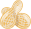
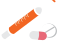

מבוא

מהם סקרים מתקדמים?
כל מה שמגיע אחרי הטיפול הראשוני - לקיחת מדדים באופן מספרי, חיבור למכשירים שיש ברכב
הפינוי,
פתיחת
וריד, העברת דיווח, חזרה רוטינית על כל סבב הבדיקות שוב ושוב
וניטור של הפצוע...
חשוב להדגיש שעל כל פצוע יבוצעו
הסקרים המתקדמים,
בין אם בשטח ובין אם בפינוי.
הסקרים המתקדמים,
בין אם בשטח ובין אם בפינוי.
בפועל, רוב הטיפול והזמן בשטח מוקדשים לסקרים מתקדמים, מכיוון שהמון פעמים הפינוי יגיע אחרי שנסיים
לבצע את
הסכמה הראשונית.
סכמת הטיפול בפצוע בודד מורכבת מ-3 סקרים:
1
סקר ראשוני
- אותו למדנו בשיעורים SAB ו-CDE
2
סקר החייאה
3
סקר שניוני
סקר החייאה

לאחר שסיימנו את הסקר הראשוני,
נבצע הערכה מחודשת.
נבצע בדיקת גוף חוזרת
וכן נעריך את הפצוע מחדש -
נחזור על שלבי הסכימה
וננטר אחר המדדים.
נבצע הערכה מחודשת.
נבצע בדיקת גוף חוזרת
וכן נעריך את הפצוע מחדש -
נחזור על שלבי הסכימה
וננטר אחר המדדים.
ניטור רציף ומתמיד לאורך כל הסכימה!
מתי נפתח וריד?
פצוע אשר זקוק להחזר נוזלים
פצוע שזקוק להרדמה
(בהתייעצות עם מט"ב)
לפני מתן הנוזלים, תמיד צריך לבדוק מה מרחק ההגעה של המט”ב ולהתייעץ עמו במידת האפשר
לגבי
מתן
הנוזלים!
במידה ואין מט”ב זמין להתייעצות
ומרחק ההגעה שלו ארוך מ-15 דקות,
יש לתת הרטמן
מתי ניתן הרטמן לפצוע הלם עמוק?
ל"ד סיסטולי נמוך מ-90
דופק מעל 130 בדקה
אם מתקיים לפחות אחד מהמקרים האלו יש להחדיר 0.5 ליטר של הרטמן.
בסיום השקית, יש להמתין 10 דקות ולעשות הערכה מחודשת. במידה והפצוע עדיין בהלם עמוק יש להמתין 10 דקות, יש לתת עוד 0.5 ליטר של הרטמן.
בסיום השקית, יש להמתין 10 דקות ולעשות הערכה מחודשת. במידה והפצוע עדיין בהלם עמוק יש להמתין 10 דקות, יש לתת עוד 0.5 ליטר של הרטמן.
בסמכות חובש לספק עד 2 ליטר הרטמן לפצוע!
חסרונות במתן הרטמן
מעלה ל”ד באופן זמני בלבד - יכול להחמיר דימומים קיימים.
מדלל את הדם ופוגע בחמצון
הרטמן קר יכול לגרום להיפותרמיה.
ניתן את ההרטמן רק לפצוע בהלם עמוק.
למה חשוב לטפל בכאב במקום להתמקד בפצע עצמו?
מאפשר טיפול - פצוע כאוב לא ייתן לגעת בו.
מבצעית - פצוע צועק חושף את הכוח.
הקלה על הנשימה - בייחוד פגיעות חזה.
PTSD = post traumatic stress disorder טיפול בכאב מפחית את
סיכויי הפצוע ללקות בפוסט טראומה.
חשוב לדעת
מורפיום לעתים מוריד לחץ דם ומערפל הכרתית, לכן-
יש 2 מצבים בהם חל איסור לתת מורפיום לפצוע:
הפצוע בהלם עמוק
- היעדר רדיאלי, דופק מעל 130, ל”ד סיסטולי מתחת ל-90.
הפצוע מעורפל הכרה
טופס 101 הוא התיק הרפואי של המטופל בשטח.
הטופס מהווה מסמך משפטי לכל דבר ומאפשר רציפות טיפולית מכיוון שהוא מועבר מכל מטפל
למטפל
הבא.
ניתן למלא אותו בשטח או במהלך הפינוי.
לתמונת הטופס

אין לדחות פינוי לשם מילוי הטופס!
למה טופס 101 חשוב?
רציפות הטיפול
- ללא תיעוד מתאים, הצוות המטפל יכול לתת מורפיום לפצוע שקיבל כבר
2 מזרקים, או נוזלים לפצוע שכבר
קיבל 2 ליטרים וכו’.
אבחנה
- בבית החולים ירצו לדעת את תמונת המצב המלאה של הפצוע, החל מסיפור המקרה ועד המדדים
על מנת
לתת
לפצוע טיפול מתאים.

למידה
- כדי ללמוד מטעויות בשטח, ולשפר את התו”ל חיל הרפואה מסתמך על התיעוד בשטח.
איזה פרטים חשובים לטופס 101?
פציעות
- נסמן על הציור.
סכמה
- מדדים ראשוניים, הערכה וטיפול בכל שלב.
תרופות שניתנו
- נוזלים, משככי כאבים.
סיפור מקרה
- התרשמות מזירת האירוע.
אנמנזה
- תלונות, תרופות, אלרגיות, מחלות.

מעקב
- אחר מדדים חוזרים.

לקיומה של תגובת
דחק/ הלם קרב
לאחר שטיפלנו על פי הממצאים בסקר הראשוני, נבצע הערכה ראשונית לקיומה של תגובת דחק/ הלם קרב.
נתרשם מסימני תגובת קרב:
קריסה תפקודית
ניתוק
בדידות
חוסר אונים
הצפה רגשית
בלבול
בהמשך, נבצע התערבות מג”ן במידת הצורך.
סקר שניוני
הסקר השניוני מתייחס לפעולות אותן נבצע במידה והפינוי טרם הגיע / טרם הגענו לבית החולים.
וטיפול תרופתי
בשלב זה נמשיך לנטר אחר מצבו של הפצוע ולתעד את הממצאים.

טיפול תרופתי
ניתן להזריק מזרק מורפיום נוסף במידה והכאב עדיין בלתי נסבל לאחר 20 דקות
ומט”ב עדיין לא הגיע.
המרות
מטרות השלב
חבישת דימומים שנעצרו, שפשופים, חתכים וכו’ על מנת למנוע זיהום.
כאשר הפצוע מעורפל הכרה.
המרות יבוצעו ע”י חובש אם הפינוי ארוך משעה ואם לא עברו שעתיים מרגע הנחת ה- CAT
מג"ן
בהתאם לממצאים מההערכה הראשונית, נבצע התערבות מג”ן(מוביל גיוס חוסן נפשי) לפי שלבי היהלו”ם:
1
יצירת קשר
2
הדגשת מחויבות
3
לברר עובדות
4
וידוא סדר התרחשות
5
מתן משימות
בסקרים המתקדמים למטפל הבכיר יש אמצעים רבים לטיפול בפצוע. לכן, על החובש להכיר אמצעים
אלו במידה ויעבוד
ביחד עם מט”ב:
הקסאקפרון - מטרתו עצירת דימומים בלתי לחיצים על מנת
לעזור
לקרישת הדם.
פלסמה - נוזל הבחירה בצה”ל לפצוע בהלם עמוק
פרוצדורות - בסמכות המט”ב לבצע מספר פרוצדורות כמו
אינטובציה,
קוניוטומיה ונקז חזה. (נלמד בהמשך)
קיבועים - קרש גב, סד תומס. (נלמד בהמשך)
תרופות IV - שיכוך כאבים, הרדמה ועוד

אודות
ראש מדור טי"ל: רס"ן מיגל לויתן
ניהול הפרויקט: רב"ט גל גנסין
אפיון תוצר הדרכתי: רב"ט גל גנסין
תכנות: סמל נועה עובדיה
עיצוב: טור' מייה ליבנה
מומחה תוכן בה"ד 10: סרן רוני ארמון
גירסה: 2020 1.0